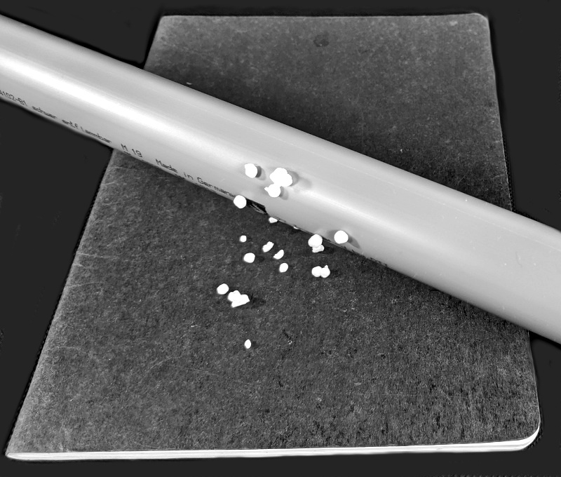

Introduction
Physical Computing [1] is all around us. Our smartphones, our cars, our washing machines, all are examples of physical computing. Even our toaster has become smart these days. Smart meaning controlled by a microcontroller [2], and physical computing meaning some electronic components controlled by a microcontroller. If these electronic components are electric motors, magnets or other actuators, then the electronic becomes physical, meaning something moves [3]. But physical also means measuring things like temperature, sound, and light. We want to learn about all these, about electronics, about electronic components, and about microcontrollers.
.
A Brief History of Electricity
Electricity was known to humans for a long time [4]. The first one's were the ancient Egyptians, already in 2750 BCE they were writing about shocks from electric fish. The ancient Arabs were the first to make the connection between electric fish and lightning. Ancient Mediterranean cultures knew that rubbing amber with a cat's fur can attract small objects such as feathers.
Then in the 17th century things started to get interesting. In 1663 Otto von Guericke invented the friction machine, which produced static electricity [5]. About eighty years later, in 1745, Ewald Georg von Kleist, and independently Pieter van Musschenbroek, invented what is now called the Leyden jar, which could store static electricity [6]. Another fifty years later, in 1791, Luigi Galvani connected metal cable to the nerves and muscles of a frog, and was startled when they moved [7]. Alessandro Volta repeated Galvani's experiments, and by refining them invented the Voltaic pile [8]. This was the first battery providing constant current. And the rest is history as they say [9].
.
What is Electricity?
From this brief history lesson we learn, that electricity has fascinated people for thousands of years. Over those years people tried to get an understanding, and they came up with analogies, but also new concepts and ideas. The most important ones are charge, current and voltage. First people identified charges. There are two kinds: negative and positive [10]. Electrons, for instance carry negative charge, and protons carry positive charge. Then people realized that these charges can move. And that is what we call a current: a current is moving charges, like water currents are moving water. If there are no charges moving, then there is no current. And finally, what makes these charges move? That is what voltage is. Only if there is a voltage then charges will move. That is similar to water will move only downhill, if it is flat, water will not move.
.
 Simple Analogy
Simple Analogy
If you want an analogy, then think of a toy wooden railroad track. The little cars are like the charges. If you put a car on a track, and the track is flat, the car will just sit there. No current flowing. But if the track is inclined, then the little cars will move down the track. Hence we have a current. And the height, is the potential, in this case the gravitational potential, in the case of electrons the electric potential. And another name for electric potential is voltage. By the way, the track for our cars, is like a piece of cooper wire for the charges.
With analogies we always have to be a little carful. Although it is true, that having more cars, is equivalent to having a higher current. But if in our train example, we make the slope steeper, then the cars will move faster. Well, for electrons there is no faster. They always move pretty much with the same speed (about half the speed of light). Therefore analogies are helpful, but one needs to know their limits. For most of what we do, the railroad track analogy will work fine.
.
Conductors of Electricity
One more thing we need to talk about, and that is conductors [11]. Like in classical music, there are good conductors and bad conductors. Usually metals are good conductors, whereas glass, ceramics, wood, and plastic are bad conductors of electricity. Bad conductors are also called insulators. Also air, tends to be a poor conductor. For water it depends: destilled water is not a good conductor, but add some salt and it becomes a decent conductor.
There is one more type of conductor, the semi-conductor [12]. Silicon and germanium are semi-conductors. As their name suggests, they are kind of in between conductors and insulators.
How can we distinguish conductors from semi-conductors? Well, there is an interesting temperature dependence of the conductivity: the conductivity of conductors reduces as temperature increases, whereas for semi-conductors it is the opposite way. This may seem pretty useless, but if you look at what the difference the invention of the transistor made, you might think differently about this seemingly useless property [].
There is also something called super-conductors, but it is forbidden to talk about those [13].
[Image source: https://www.electronics-tutorials.ws/diode/diode_1.html]\\
.
Review
We took a very brief look at the history of electricity, we learned about charge, current and voltage, and we learned about conductors. We saw that there are analogies, but also noticed, that we have to be a little careful with analogies. In the next section, the labs, we will repeat some of those historic experiments with simple household items.
.
Labs
Before we start with our first lab section, we need to talk about safety. In case you haven't you must read the chapter on Labs and Safety before proceeding. You will have to sign a statement stating that you obey by the rules set forth therein.
In the labs you will work in teams of two students. You will perform experiments and write down the results of these experiments in your laboratory notebook. At the end of the labs, your instructor will sign and wittness your entries. Laboratory notebooks are used in industrial labs as a primary record of research. It can have an essential role in protecting any intellectual property that comes from the research [17].
.
Preparations
Labs will require preparations beforehand, usually given as an assignment. In case you have not done the preparation, you are not permitted to perform the lab.
Before attempting to perform any of the experiments in this lab, you need to have done the following preparations beforehand:
- You should know what to do in case of an emergency [14].
- You should know about the dangers of static electricity to people and equipment. (Look for "dangers of electrostatics" on Google.)
- You should know what a short-circuit is, and why it is dangerous.
In addition you should familiarize yourself with the laboratory notebook how to set it up, how to use it, and why it is important. For this please read [15,16].
.
Note to Instructors
Equipment needed for the labs in this chapter: alligator clips, aluminum foil, balloons, batteries (1.5V and 9V), coil, copper wire, electroscope, graphite, hot water, ice cubes, iron nails, Leyden jar, lighter, multimeter, potato/lemon, saran wrap, silicon, small iron nail or needle, small magnet, small solar cell, thread, PVC pipe, towel, blue LED, resistor, anti-slug copper strip.
.
Experiments
In this lab we will learn some of the physical principles behind electric components. We actually build a whole bunch ourselves: we learn how to make our own resistor (graphite), capacitor (alu+saran), and inductor (wire+nail). We also learn how to use a multimeter to measure volt, ampere, resistance, capacitance, and inductance.
.
1. Balloons
Equipment: childrens balloons, t-shirt.
One of the simplest demonstration of static electricity is with childrens balloons. Simply rub the balloon on a synthetic cloth, like a t-shirt for instance, and then hold it to the wall. The balloon should stick to the wall for a little while. If you heave feathers, small styrofoam pieces or small pieces of paper, they should be attrackted to the balloon.
Question: Why is that?
.
2. PVC Pipe (Instructor)
Equipment: PVC pipe, towel.
IMPORTANT: No computers, smart phones, smart watches or any other electronic devices should be near static electricity!
Since most of us do not have cat fur and/or amber at our disposal, nowadays we use towels and PVC pipes instead. Basically the same idea as with the balloon, but a little more effective is the PVC pipe. You need a PVC pipe and a towel. Rub the PVC pipe with the towel for a few times. Some techniques are more efficient than others. You will notice that small pieces of paper get attracted or repelled by the PVC pipe. You can also try to touch the balloon with the charged PVC pipe.
.
 3. Electroscope (Instructor)
3. Electroscope (Instructor)
Equipment: electroscope, balloons, PVC pipe, battery, towel.
IMPORTANT: No computers, smart phones, smart watches or any other electronic devices should be near static electricity!
We can use a simple electroscope to measure static electricity. Use a balloon to generate static electricity. Use a towel and a PVC pipe to generate static electricity. Try to connect a battery to the electroscope. Which of the three methods creates the most static electricity?
In our first two experiments we saw how to create static electricity. But how do we measure electricity [18]? Well, you can use little pieces of paper and see if they get attracted. Or you could touch the electric fish, or touch the PVC pipe and get an electric shock, not recommended. That is at the minimum unpleasant, and depending on the voltage even dangerous. You could also use frog legs, if you happen to have them handy.
Alternatively, we can use an electroscope. With simple household items, we can actually build our own.
.
4. Leyden Jar
Equipment: electroscope, Leyden jar.
A Leyden jar [6] is basically a capacitor. Like the electroscope, it is really easy to build our own Leyden jar. Once build, we can use the mutlimeter to measure the capacitance of our Leyden jar.
.
5. Ground (Instructor)
Equipment: electroscope, Leyden jar, anti-slug copper strip.
It is time to learn about what electrical engineers refer to as "ground" [24]. You may want to watch video [19] to learn a little more about ground. If you repeat the above experiments with the PVC pipe, the Leyden jar and later the capacitor, with one of the ends being connected to ground, you will notice that all the effects are significantly stronger.
I hope it is clear, that Mehdi Sadaghdar, also known on YouTube as ElectroBOOM, is an electrical engineer. That means he knows what he is doing. You should not attempt to repeat any of his experiments! Still they are very entertaining and instructional.
.
6. Measuring Voltage
Equipment: multimeter, two 1.5V batteries.
Another way to measure electricty is with a voltmeter, or in our case a multimeter. To get started we want to measure the voltages of batteries. First, just measure the voltages individually, then connect them in series, that means the plus of one 1.5V battery connected to the minus of the other 1.5V battery. You can look at reference [20] if you need additional help.
.
.
 7. Homemade Battery
7. Homemade Battery
Equipment: multimeter, potato/lemon, aluminum foil, copper wire, alligator clips, iron nail.
First, take aluminum and connect it to the multimeter using alligator clips. Then moisten your fingers, touch the aluminum and the other lead of the multimeter, and measure the voltage. Try this with different metals like iron or copper. [21]
Second, stick a piece of copper wire and an iron nail into a potato or lemon. Measure the voltage using the multimeter. Again use different metals, and for each combination measure the voltage difference. Does it make a difference if you use a potato or a lemon?
Questions:
- What other ways are there to create electricity?
- How do you know if a battery is full or empty?
- Assume you want to create a battery with a voltage of 1.1 volts. Which metals would you use? [22]
Another interesting experiment is the Aluminum Air Battery [23] you can try at home, if you like.
.
 8. Resistance
8. Resistance
Equipment: multimeter, two hands.
Set your multimeter to measure resistance (Ohm). Then hold the two leads between your fingers, and see what resistance your body has. Now moisten your fingers and repeat the experiment. You should notice that the resistance is less now.
.
.
.
9. Conductance
Equipment: multimeter, copper wire, coil, graphite, alligator clips.
Use your multimeter to measure resistance. First, start with a piece of copper wire. Take a short piece and measure it. Then use the coil and measure its resistance. According to Amazon, it is 280 meters long (all eight or only one wire?).
Second, use graphite pencil leads. Take the following measurements:
- full length pencil leads 0.5mm
- full length pencil leads 0.7mm
- half length pencil leads 0.5mm
- two half length pencil leads 0.5mm connected in series
- two half length pencil leads 0.5mm connected in parallel
Record their respective conductance. Conductance is the inverse of resistivity.
Question: What are the units of conductance? How could you estimate the length of the above wire via its resistance?
.
10. Resistor
Equipment: multimeter, graphite, alligator clips.
Make your own resistor out of graphite pencil leads. First, measure the resistance of the graphite in ohm. Then make your own resistor that has the resistance of exactly 4 ohms.
This is basically how a carbon film resistor works.
Question: Could you also create a variable resistor?
.
11. Capacitor
Equipment: multimeter, aluminum foil, saran wrap, blue LED, alligator clips, 9V battery.
Another way to build a capacitor is with aluminum foil and saran wrap. Make a sandwhich, starting with a layer of saran wrap, followed by aluminum foil, another layer of saran wrap, and another layer of aluminum foil. Have two thin pieces of additional aluminum foil stick out perpendicular for contacts to the two different layers of aluminum foil. Roll the whole thing up like a burrito.
- Use the multlimeter to measure capacitance of your "burrito".
- Charge your "burrito" with the 9V battery. Use the multlimeter to measure voltage.
.
12. Coil
Equipment: multimeter, coil, iron nails.
A current flowing through a coil will generate a magnetic field. Use the multimeter to measure the inductance of the coil in henry. Now place some iron nails in the inside of the coil and measure the inductance again. The coil consists of eight wires. Instead of using just one wire, use two and then three wires, in series. Each time measure the inductance.
.
Question: How does the inductance depend on the number of turns? Is it like \(N^0\), \(N^1\), or \(N^2\)?
.
13. Homemade Ammeter (Instructor)
Equipment: coil, iron nails, thread, small iron nail or needle, small magnet.
Use the coil and add some nails in the inside. Connect to 9V battery only briefly! Measure the magnetic field with your smartphone (in case your phone has a magnetic sensor). Build your own ammeter by suspending a nail or a magnet from a tripod just in front of the coil. The nail should move, when the coil is connected to the battery. The more current the more it will move. This is basically how an analog ammeter works.
Next, use the multimeter to measure the ampere flowing through the coil (should be about 1 ampere).
Questions:
- If your battery is rated 800mAh, how long will it take to drain your battery (assuming 1 ampere of current is drawn)?
- Why do we add nails to the coil?
.
Challenges
.
1. Conductor vs Semi-Conductor (Instructor)
Equipment: multimeter, copper wire, graphite, silicon, hot water, ice cubes, lighter.
There are conductors, semi-conductors and insulators. There is an interesting temperature dependence for the different materials, which we can measure.
First, we look at a conductor, graphite (pencil lead). Measure its resistance using a multimeter. Next, use a lighter or a candle to heat it up a little, while still measuring the resistance. Notice that the resistance changes. (You could also use any metal wire, just the effect is smaller).
Next, use silicon, a semi-conductor. Put it in hot, clean water and measure the resistance. Then add ice cubes to the water and observe what happens to the resistance.
.
Questions
-
Name three ways to generate electricity.
-
The galvanic cell corresponds to a
- capacitor
- resistor
- transistor
-
battery.
-
Which one has the higher resistance?
- pencil lead of 0.7 mm thickness
-
pencil lead of 0.5 mm thickness.
-
Give an example each for a conductor, a semiconductor and an insulator.
- Describe how you can build your own capacitor out of aluminum foil and saran wrap.
.
References
If you never heard about any of the things we talked about today, it may make sense to read the Wikipedia articles [1-5]. The textbook "Lessons in Electric Circuits" has a decent introduction into static electricity. You may want to read chapter 1 [7]. There is also the German "Elektronik Kompendium" website and book, and you may want to read the first four chapters under the "Elektrotechnische Physik" heading ("Atome, Elektronen und Ionen", "Elektrische Ladung", "Elektrische Spannung", "Elektrischer Strom / Elektrische Stromstärke") [8]. Finally, there is the "Electronics" Wikibook [9]. It is o.k., but very brief.
.
[1] Physical computing, https://en.wikipedia.org/wiki/Physical_computing
[2] Microcontroller, https://en.wikipedia.org/wiki/Microcontroller
[3] Actuator, https://en.wikipedia.org/wiki/Actuator
[4] Electricity history, https://en.wikipedia.org/wiki/Electricity#History
[5] Electrostatic Generator, https://en.wikipedia.org/wiki/Electrostatic_generator#History
[6] Leyden jar, https://en.wikipedia.org/wiki/Leyden_jar
[7] Luigi Galvani, https://en.wikipedia.org/wiki/Luigi_Galvani#Galvani_vs._Volta
[8] Voltaic pile, https://en.wikipedia.org/wiki/Luigi_Galvani#Galvani_vs._Volta
[9] Zap, Crackle and Pop: The Story of Electricity, https://www.youtube.com/watch?v=Ch6jti8i6u4
[10] Discovery of two kinds of charges, https://en.wikipedia.org/wiki/Electron#Discovery_of_two_kinds_of_charges
[11] Electrical conductor, https://en.wikipedia.org/wiki/Electrical_conductor
[12] Semiconductor, https://en.wikipedia.org/wiki/Semiconductor
[13] Superconductivity, https://en.wikipedia.org/wiki/Superconductivity
[14] Emergency Response Chapter 3 - Electrical Safety, www.allaboutcircuits.com/textbook/direct-current/chpt-3/emergency-response/
[15] Instructions for Using Your Laboratory Notebook, IW Hunter and BJ Hughey, web.mit.edu/me-ugoffice/communication/labnotebooks.pdf
[16] How to Start–and Keep–a Laboratory Notebook, www.iphandbook.org/handbook/ch08/p02/
[17] Lab notebook, https://en.wikipedia.org/wiki/Lab_notebook
[18] How to Measure Static Electricity, www.wikihow.com/Measure-Static-Electricity
[19] Make a SUPER HIGH VOLTAGE Capacitor, www.youtube.com/watch?v=xjW-isgOijs
[20] Measuring voltage, isaac.exploratorium.edu/~pauld/summer_institute/summer_day15current/voltage.html
[21] Hand Battery, www.exploratorium.edu/snacks/hand-battery
[22] Standard Electrode Potentials, hyperphysics.phy-astr.gsu.edu/hbase/Chemical/electrode.html#c1
[23] Aluminum Air Battery, isaac.exploratorium.edu/~pauld/activities/AlAirBattery/alairbattery.html
[24] Ground (electricity), https://en.wikipedia.org/wiki/Ground_(electricity)
[25] Hubert-François Gravelot: Die Elektrisierte, Wikipedia, the original uploader was Rainer Zenz at German Wikipedia. / Public domain, https://commons.wikimedia.org/wiki/File:Elektrisiermaschine.jpg
{kind=link}
.